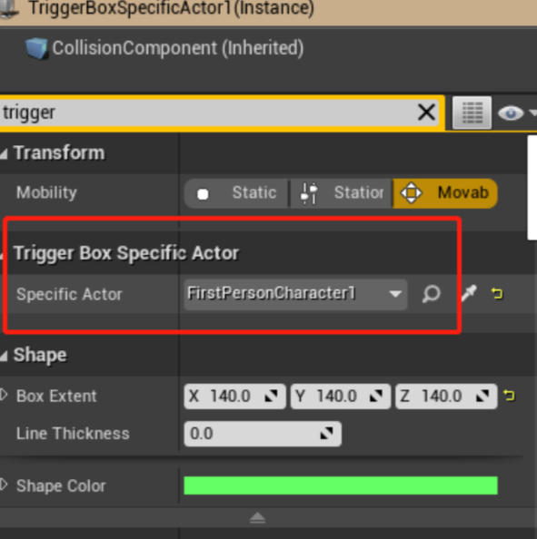

21. 指定 Actor 的触发器框
接上一节教程，本教程将通过特定的 actor 触发重叠事件。
创建一个新的 C++ TriggerBox 类，并将其命名为 TriggerBoxSpecificActor。在头文件中，我们将为特定的 actor 声明两个 void 重叠函数和 AActor 类。
下面是最终的头代码。
TriggerBoxSpecificActor.h
#pragma once
#include "CoreMinimal.h"
#include "Engine/TriggerBox.h"
#include "TriggerBoxSpecificActor.generated.h"
UCLASS()
class UNREALCPP_API ATriggerBoxSpecificActor : public ATriggerBox
{
GENERATED_BODY()
protected:
// Called when the game starts or when spawned
virtual void BeginPlay() override;
public:
// constructor sets default values for this actor's properties
ATriggerBoxSpecificActor();
// overlap begin function
UFUNCTION()
void OnOverlapBegin(class AActor* OverlappedActor, class AActor* OtherActor);
// overlap end function
UFUNCTION()
void OnOverlapEnd(class AActor* OverlappedActor, class AActor* OtherActor);
// specific actor for overlap
UPROPERTY(EditAnywhere)
class AActor* SpecificActor;
};
在 .cpp 文件中，为了帮助我们可视化触发器框，我们必须 #include "DrawDebugHelpers.h" 文件。
#include "TriggerBoxSpecificActor.h"
// include draw debug helpers header file
#include "DrawDebugHelpers.h"
我们也可以 #define 一些调试日志的快捷方式。
#define print(text) if (GEngine) GEngine->AddOnScreenDebugMessage(-1, 1.5, FColor::Green,text)
#define printFString(text, fstring) if (GEngine) GEngine->AddOnScreenDebugMessage(-1, 5.f, FColor::Green, FString::Printf(TEXT(text), fstring))
在 actor 的构造函数中，我们将向 OnActorBeginOverlap.AddDynamic 和 OnActorEndOverlap.AddDynamic 注册重叠事件。
ATriggerBoxSpecificActor::ATriggerBoxSpecificActor()
{
//Register Events
OnActorBeginOverlap.AddDynamic(this, &ATriggerBoxSpecificActor::OnOverlapBegin);
OnActorEndOverlap.AddDynamic(this, &ATriggerBoxSpecificActor::OnOverlapEnd);
}
在 BeginPlay 上，我们将使用 DrawDebugBox 绘制调试框。
// Called when the game starts or when spawned
void ATriggerBoxSpecificActor::BeginPlay()
{
Super::BeginPlay();
DrawDebugBox(GetWorld(), GetActorLocation(), GetComponentsBoundingBox().GetExtent(), FColor::Green, true, -1, 0, 5);
}
接下来，我们将编写重叠函数，当特定的 actor 进入和退出 TriggerBox 时，它将向屏幕打印一条消息。在重叠函数中，我们通过 OtherActor == SpecificActor 来检查 TriggerBox 中的 actor 是否是我们的特定 actor。
void ATriggerBoxSpecificActor::OnOverlapBegin(class AActor* OverlappedActor, class AActor* OtherActor)
{
//if the overlapping actor is the specific actor we identified in the editor
if (OtherActor && (OtherActor != this) && OtherActor == SpecificActor )
{
print("Overlap Begin");
printFString("Overlapping Actor = %s", *OtherActor->GetName());
}
}
void ATriggerBoxSpecificActor::OnOverlapEnd(class AActor* OverlappedActor, class AActor* OtherActor)
{
//if the overlapping actor is the specific actor we identified in the editor
if (OtherActor && (OtherActor != this) && OtherActor == SpecificActor )
{
print("Overlap End");
printFString("%s has left the Trigger Box", *OtherActor->GetName());
}
}
编译代码。将新 actor 拖放到游戏中。

运行起来是这样的：

在 actor 的详细信息面板中添加一个 actor，即特定 actor。

点击播放按钮，将特定的 actor 进进出出 TriggerBox 中以触发重叠事件。
下面是进进出出的效果图：